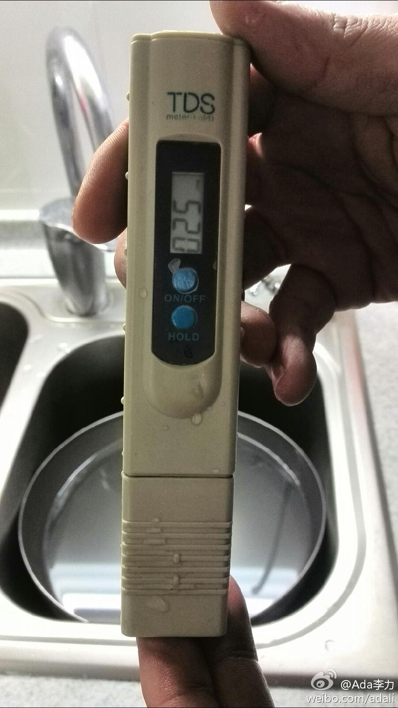
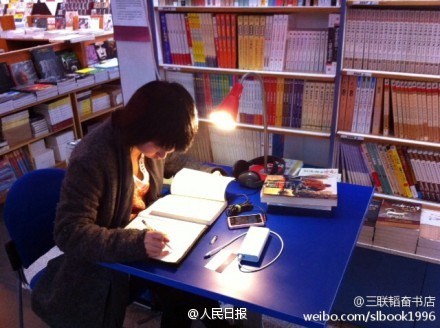
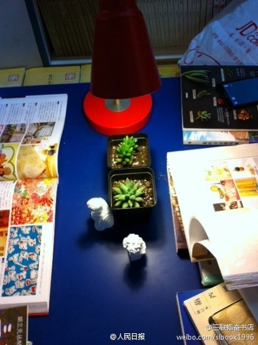
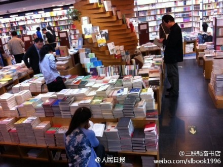
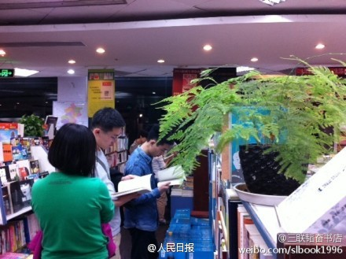
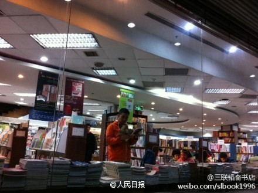
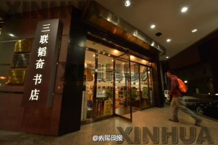
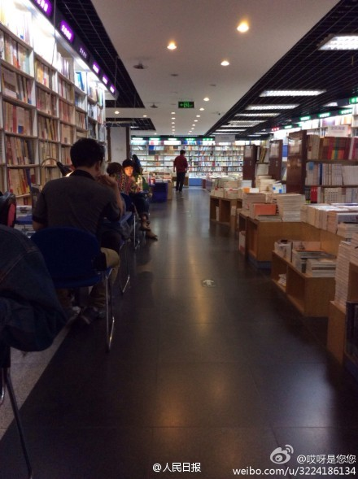
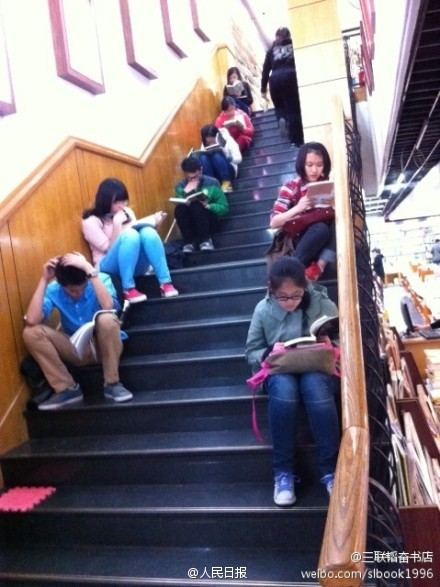
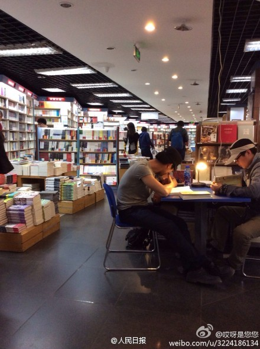

家里净水器用了有一段时间了，一直想知道过滤后的水质是否有变化。得知海尔有免费上门检测水质服务，就预约了下，检测结果：原始水质TDS值是199， 过滤后是25。有个跟我们定了一样净水器的朋友，因为烧过滤后的水有白垢，一直也犯嘀咕，不放心的话，也可以检测下。[呵呵] 
真有这个可能。//@网络化制造:加个分享功能，互联网公司又可以免费送了，之后微博上全是晒水质的帖子。//@王海鹏Seal:我们需要各种检测仪器。@Ada李力:家里净水器用了有一段时间了，一直想知道过滤后的水质是否有变化。得知海尔有免费上门检测水质服务，就预约了下，检测结果：原始水质TDS值是199， 过滤后是25。有个跟我们定了一样净水器的朋友，因为烧过滤后的水有白垢，一直也犯嘀咕，不放心的话，也可以检测下。[呵呵]
在东城区五四大街的中国美术馆附近，很好找。交通颇为便捷。 //@2gua:我发现太适合我了……@人民日报:【[转发]24小时不打烊的书店，你会去吗？】当城市进入午夜，书店就是灯火。经过10天试营业，18日晚，北京三联韬奋书店正式成为全天不打烊的24小时书店，也是北京第一家全天候开放的书店。书店门口已经亮起“24”字样的灯牌。不一样的夜读生活，我们一起去吧？ 